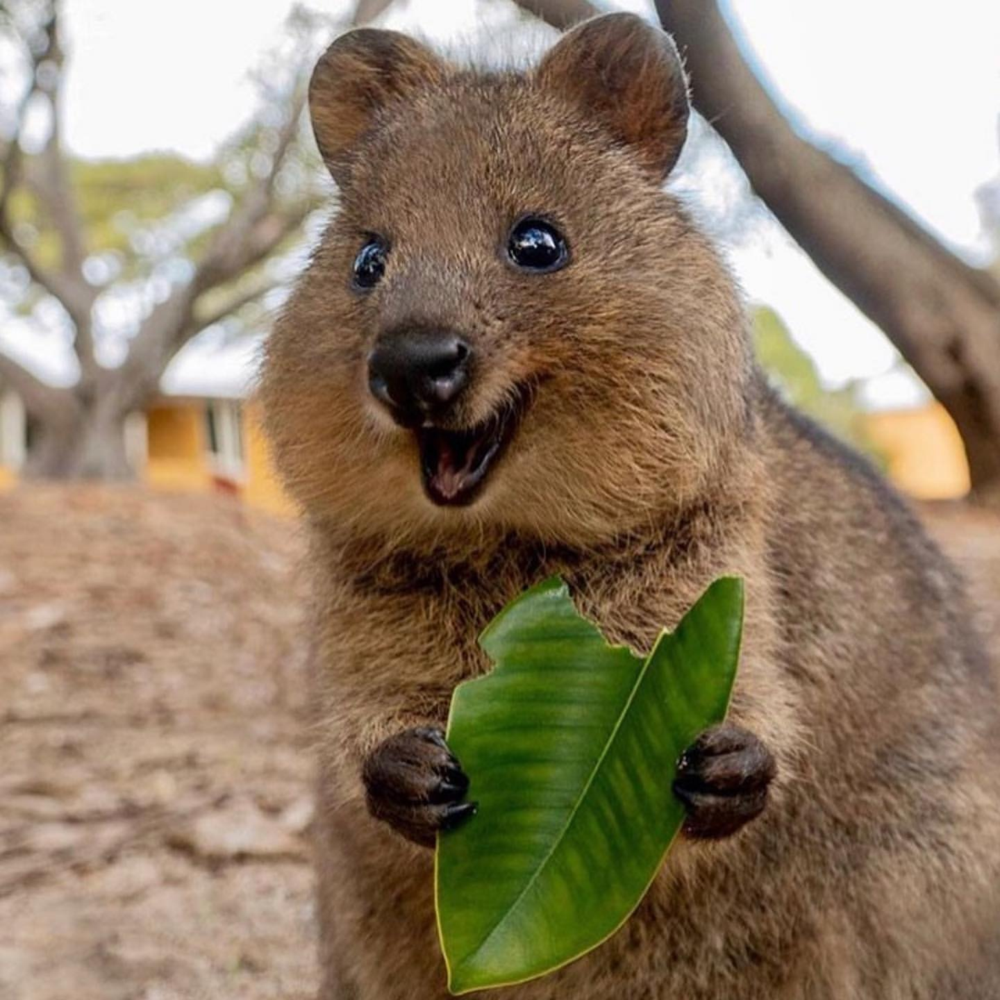

Все о миленькой квокке
Необычная мышка, бурундучок ? Кто эти милые животные ?
Как выглядит квокка
Внешне квокка очень похож на большого грызуна с маленькими передними лапками и 30-сантиметровым хвостиком. Весит он всего 2–5 кг и по размерам похож на небольшую собаку. Правда, в отличие от нее, квокка — травоядный.

Злейшие враги квокки
Лисы и кошки — заклятые враги квокки. Вот почему короткохвостые кенгуру, как еще называют квокк, водятся только на островах Балд, Роттнест, Пингвин и кое-где в Западной Австралии, где нет этих опасных хищников. Ученые относят квокку к уязвимым видам. Из-за расширения сельскохозяйственных угодий и осушения болот численность этих пушистиков резко уменьшилась.
